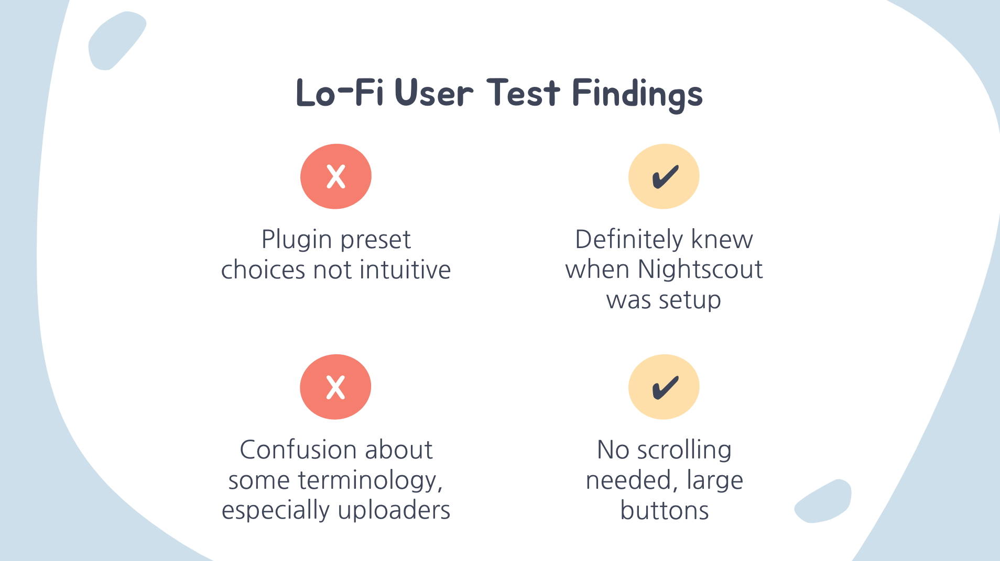
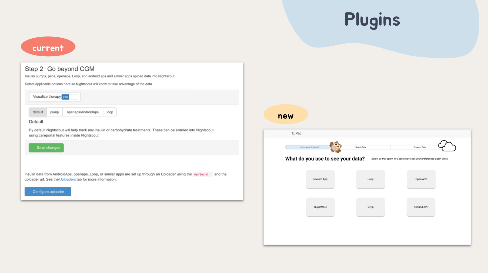

For 10 weeks, I remotely worked alongside peers at The Design Lab at UCSD as part of the T1Pal team. My team and I worked to figure out the best way to help T1Pal present Nightscout in a digestible manner for all users regardless of tech background.
UX Designer, UX Researcher
User Research, Journey Mapping, Prototyping, Testing, Wireframing, Figma, Miro
Jun - Aug 2020 (10 weeks)
Background —
Problem Statment —
What's The Challenge? —
Research —
Personas —
Ideation Goals —
Prototype —
User Test Findings —
New User Flow —
Iterations —
Final Prototype —
What I Did —
I’d like to thank our dedicated DDI mentors, Heidi
Rataj and Karen Yeung, and Ben West for this creative opportunity.
Another thank you to my creative teammates Austin Labador, Michelle
Duong, and Amanda Lo!
If you’d like to learn more about this project, contact me!